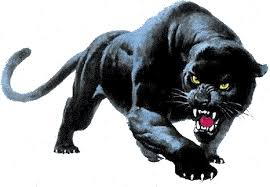

Panther
panthers have the same markings as their leopard and jaguar peers, with the pattern visible through the darkness of the coat. This effect is known as “ghost striping”.
- Scientific name: Panthera pardus, Panthera onca
- Habitat:Forests, swamplands, grasslands
- Behaviour :Solitary, nocturnal
- Life Span: 12-15 years
The animal known as a "panther" actually refers to 3 different types of big cats, leopards (Panthera pardus) or jaguars (Panthera onca) that have a black or white color mutation and a subspecies of the cougar (Puma concolor). The "black panther" is a black jaguar of the Americas or a black leopard of Asia and Africa